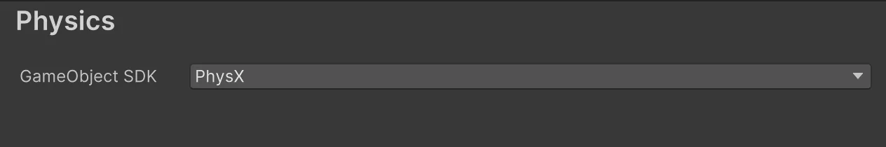
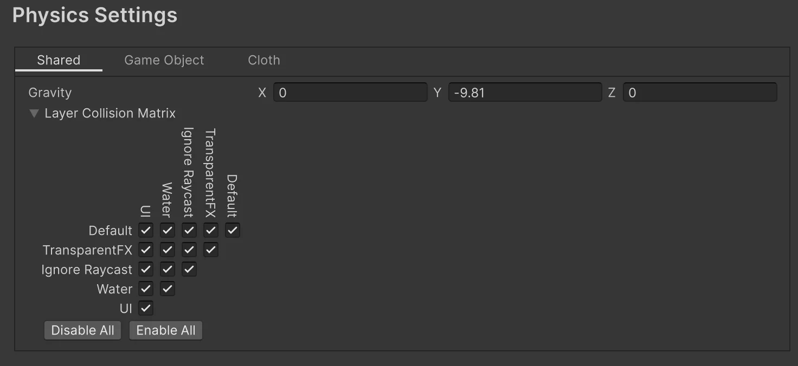
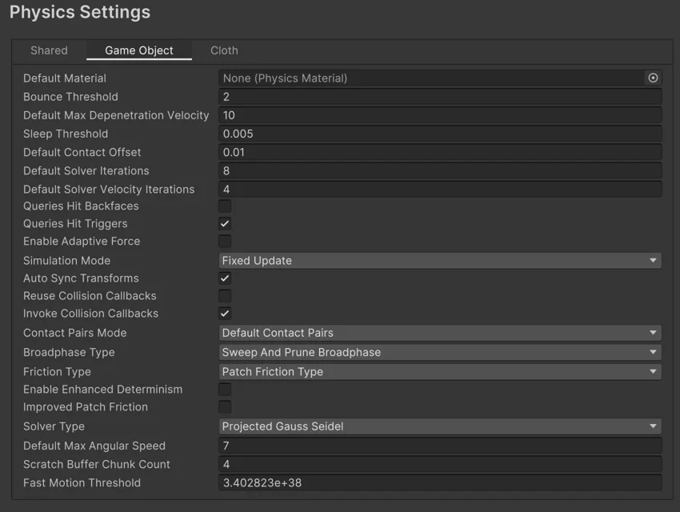
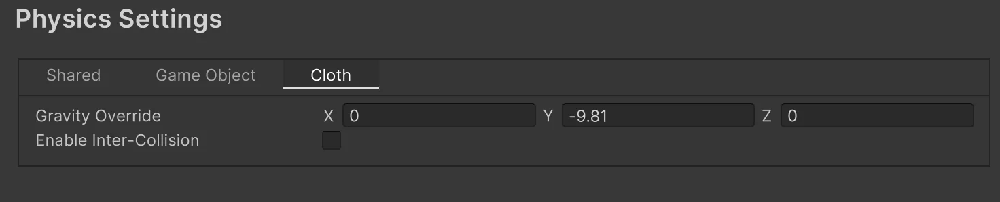

To apply global settings for 3D physics, use the Physics settings (main menu: Edit > Project Settings, then select the Physics category).
Note: To manage global settings for 2D physics, use the Physics 2D settings instead.
The Physics settings define limits on the accuracy of the 3D physical simulation. In most cases, a more accurate simulation requires more processing overhead, so these settings offer a way to trade off accuracy against performance.
The Physics panel contains settings to define which Physics SDKs you want to use in your project.

| Setting | Description |
|---|---|
| GameObject SDK | Define the SDK you want to use to manage physics simulation on GameObjects in your project. The default setting is PhysX. Set to None to disable physics simulation for GameObjects in your project. |
The Physics project settings section also contains a panel called Settings.
The Settings panel contain settings for all Physics SDKs. The following tabs are available:
The Shared tab contains global settings that apply to all physics SDKs.

| Setting | Description |
|---|---|
| Gravity | Use the x, y and z axes to set the amount of gravity applied to all Rigidbody components. For realistic gravity settings, apply a negative number to the y axis. Gravity is defined in world units per seconds squared. Note: If you increase the gravity, you might need to also increase the Default Solver Iterations value to maintain stable contacts. |
| Layer Collision Matrix | Define how the layer-based collision detection system behaves. To select which layers on the Collision Matrix interact with the other layers, check their respective checkboxes. |
The GameObject tab contains global physics settings that apply to all GameObjects in your project.

| Setting | Description |
|---|---|
| Default Material | Set a reference to the default Physics Material to use if none has been assigned to an individual Collider. |
| Bounce Threshold | Set a velocity value. If two colliding objects have a relative velocity below this value, they do not bounce off each other. This value also reduces jitter, so it is not recommended to set it to a very low value. |
| Default Max Depenetration Velocity | Define the default value for the maximum depenetration velocity (the velocity that the solver can set to a body while trying to pull it out of overlap with the other bodies). |
| Sleep Threshold | Set a global energy threshold, below which a non-kinematic Rigidbody (that is, one that is not controlled by the physics system) may go to sleep. When a Rigidbody is sleeping, it is not updated every frame, making it less resource-intensive. If a Rigidbody’s kinetic energy divided by its mass is below this threshold, it is a candidate for sleeping. |
| Default Contact Offset | Set the distance the collision detection system uses to generate collision contacts. The value must be positive, and if set too close to zero, it can cause jitter. This is set to 0.01 by default. Colliders only generate collision contacts if their distance is less than the sum of their contact offset values. |
| Default Solver Iterations | Define how many solver processes Unity runs on every physics frame. Solvers are small physics engine tasks which determine a number of physics interactions, such as the movements of joints or managing contact between overlapping Rigidbody components. This affects the quality of the solver output, and it is advisable to change the property in case non-default Time.fixedDeltaTime is used, or the configuration is extra demanding. Typically, it is used to reduce the jitter resulting from joints or contacts. |
| Default Solver Velocity Iterations | Set how many velocity processes a solver performs in each physics frame. The more processes the solver performs, the higher the accuracy of the resulting exit velocity after a Rigidbody bounce. If you experience problems with jointed Rigidbody components or Ragdolls moving too much after collisions, try increasing this value. |
| Queries Hit Backfaces | Enable this option if you want physics queries (such as Physics.Raycast) to detect hits with the backface triangles of MeshColliders. By default, this setting is disabled. |
| Queries Hit Triggers | Enable this option if you want physics hit tests (such as Raycasts, SphereCasts and SphereTests) to return a hit when they intersect with a Collider marked as a Trigger. Individual raycasts can override this behavior. By default, this setting is enabled. |
| Enable Adaptive Force | Enable this option to enable the adaptive force. The adaptive force affects the way forces are transmitted through a pile or stack of objects, to give more realistic behaviour. By default, this setting is disabled. |
| Simulation Mode | Choose when Unity executes the physics simulation from the following options:
|
| Auto Sync Transforms | Enable this option to automatically sync transform changes with the physics system whenever a Transform component changes. By default, this setting is disabled. |
| Reuse Collision Callbacks | Enable to re-use collision callbacks. The physics system only creates a single instance of the Collision type, and reuses it for each individual callback. This reduces waste for the garbage collector to handle, and improves performance. This property is enabled by default. |
| Invoke Collision Callbacks | Send MonoBehaviour collision messages for OnCollisionEnter, OnCollisionStay, and OnCollisionExit to the corresponding scripts that implement the OnCollision methods. This property is enabled by default. |
| Contact Pairs Mode | Choose the type of contact pair generation to use:
|
| Broadphase Type | Choose which broad-phase algorithm to use in the physics simulation. For more information, refer to NVIDIA’s documentation on PhysX SDK and Rigid Body Collision. Choose from the following options:
|
| World Bounds | Define the 2D grid that encloses the world to prevent far away objects from affecting each other when using the Multibox Pruning Broadphase algorithm. This option is only used when you set Broadphase Type to Multibox Pruning Broadphase. |
| World Subdivisions | The number of cells along the x and z axis in the 2D grid algorithm. This option is only used when you set Broadphase Type to Multibox Pruning Broadphase. |
| Friction Type | Choose the friction algorithm used for simulation:
|
| Enable Enhanced Determinism | Simulation in the scene is consistent regardless the actors present, provided that the game inserts the actors in a deterministic order. This mode sacrifices some performance to ensure this additional determinism. |
| Enable Unified Heightmaps | Enable this option to process Terrain collisions in the same way as Mesh collisions. |
| Improved Patch Friction | Optimize patch friction so that static and dynamic friction do not exceed analytical results. This property is deactivated by default. |
| Solver Type | Choose the PhysX solver type to use for the simulation:
|
| Default Max Angular Speed | Set the project-wide default maximum angular speed of all dynamic Rigidbody GameObjects, in radian. The default value is 50. |
| Scratch Buffer Chunk Count | The number of 16KB memory chunks to allocate to the physics system for temporary allocations. The default value is 4, which provides a 64KB buffer. |
| Fast Motion Threshold | The linear motion threshold that sweep-based CCD algorithms use to determine whether a fast-moving body moved this frame or not. Must be greater than zero. The default value is infinity, represented by the value 3.402823e+38. |
The settings in the Cloth tab apply to Cloth physics only.

| Setting | Description |
|---|---|
| Cloth Gravity | Set the gravity value on each axis for Cloth components. By default, X is set to 0, Y is set to -9.81, and Z is set to 0. |
| Enable Cloth Inter-Collision | Enable the ability for Cloth particles to collide with each other. Refer to Cloth: Self collision and intercollision for details. When you enable this setting, you can adjust the following additional settings:
|